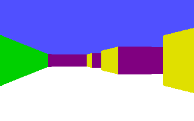
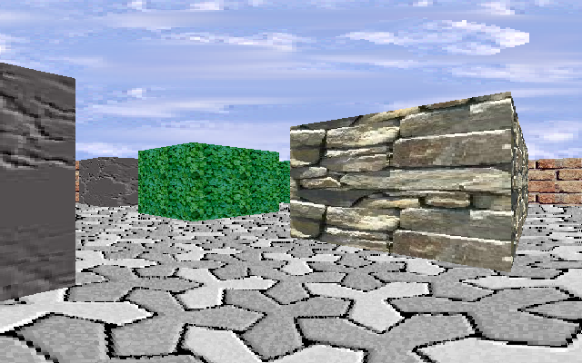
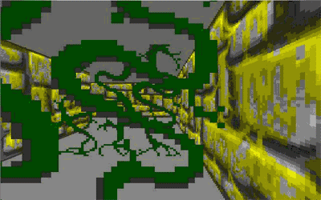

*************************************************
** **
** **
** Infographie - MiniProj 2 **
** **
** "Wolf3D" **
** **
** **
*************************************************
Ce miniproj consiste a creer graphiquement la representation
realiste que l'on pourrait avoir a l'interieur d'un labyrinthe.
** Details administratifs **
C'est un miniproj a realiser seul.
Il est a rendre pour le Lundi 19 janvier 2009 8h00, sauf indication contraire de votre responsable pedagogique.
Les modifications/precisions du sujet (si il y a lieu)
seront accompagnees d'un post dans les news.
Votre executable se trouvera dans ~/rendu/c/wolf3d/ et s'appelera "wolf3d".
** Details techniques **
La representation est realisee en utilisant le principe
de Ray-Casting decrit dans le cours.

- Vous avez le choix de la taille et de la forme du labyrinthe.
- Vous devrez gerer l'expose correctement.
- Il faudra appuyer sur la touche ESC pour quitter le programme.
- Les fleches du clavier permettent de se deplacer en temps
reel dans le labyrinthe,
- La couleur des murs varie suivant l'orientation (nord,sud,est,ouest).
- Bien sur, la norme sera respectee.
En option sur plein de points:
- On ne rentre pas dans les murs
- Des textures sur les murs
- Une texture de ciel
- Une texture de sol et/ou de plafond
- Des objets dans le labyrinthe
- On ne rentre pas dans certains objets
- Des objets qu'on ramasse pour faire des points
- Des portes qui s'ouvrent et se ferment
- Des mechants a combattre
- Des passages secrets
- Plein de niveaux
(bon, ok, si vous avez deja les 2 premieres options c'est cool !)


***********************************************************************